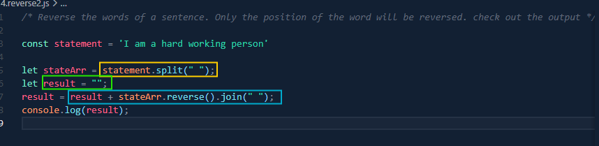

✔️Concatenating using for of loop

array.length is necessary for the looping condition in this case.
Syntax: for (let i = 0; i < array.length; i += 1) {
console.log(array[i]);
}
Syntax: for (let number of array) {
console.log(number);
}
The methods of array are:
✅includes
✅isArray
✅indexOf
✅reverse
✅join
includes checks a value exists or not. Example---
let arr2 = [5, 10, 15];
console.log(arr2.includes(100));
Output: false
Array.isArray(variableName) checks if avariable is a array or not. Example---
let str = "Ami";
console.log(Array.isArray(str));
Output: false
indexOf is used to find index number of an element. Example---
let arr = ["Nanase", "Mitsuki", "Iori"];
console.log(arr.indexOf("Mitsuki"));
Output: true
reverse is used to reverse the elements of an array. Example---
let arr = ["Nanase", "Mitsuki", "Iori"];
console.log(arr.reverse());
Output: [ 'Iori', 'Mitsuki', 'Nanase' ]
✅join is used to CONVERT an ARRAY into a STRING✅. Example---
let arr = ["Nanase", "Mitsuki", "Iori"];
let str = arr.join(" ");
console.log(str);
Output: Nanase Mitsuki Iori
Here, we took a result = [](empty array) to store the reverse value.
Then, in the for loop we have a i = colors.length -1 which takes the last element of the array as initial value.
Then, i>=0 to make it reach the first element of the array. Using i-- we decrement it.
Then, we push the elements one by one in the result array, that is, result.push(colors[i]).
Finally, the result should be printed outside the for loop.
Here, split is used to convert the string into array. The reverse method is used to reverse the array. And the join method is used to convert the array into string.
